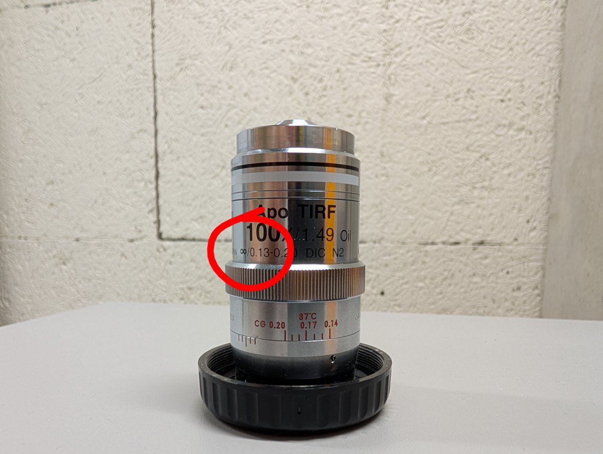

Discussion
Infinity Corrected Optics
Nearly all microscopes that you will encounter within our research lab use infinity corrected optics, so it is important to understand what this means.
An infinity corrected objective will have an infinity symbol on the barrel like the one in the photo below.

By design, the sample is located at the front focal plane of an infinity corrected objective. This means that the image of the sample is formed an infinite distance away from the objective on the other side. An image at infinity cannot be seen with a camera1, so we require a second a lens to form a real image in the camera plane. This second lens is known as the tube lens.
But why is the image of the sample formed at infinity in the first place? Recall the thin lens formula from your introductory physics class:
\[ \frac{1}{s} + \frac{1}{s’} = \frac{1}{f} \]
Here, \( s \) is the distance from the lens to the object, \( s’ \) is the distance from the lens to the image, and \( f \) is the focal length of the lens. If the object distance is equal to the focal length, then \( s = f \). But then we have
\[ \frac{1}{s’} = 0 \]
The only way to satisfy this equation is by requiring that the image distance be infinitely large. This is what we mean when we say that the image is “at infinity.”
The situation is illustrated below. An object lies at a distance \( s = f \) from a thin lens with a positive focal length, which is drawn as a vertical line with arrows at each end. Rays from a single object point emerge from the lens parallel to one another. The image plane is defined as the plane where the rays intersect one another. But the rays are parallel, so they intersect at infinity.
The Camera Sensor is in the Focal Plane of the Tube Lens
By the same logic, the camera sensor must be in the focal plane of the tube lens of a properly aligned, infinity corrected system. The image at infinity created by the objective serves as the object for the tube lens so that we have
\[ \frac{1}{\infty} + \frac{1}{s’} = \frac{1}{f} \]
or \( s’ = f \).
This situation is illustrated below. Parallel rays representing an object at infinity are brought to a focus in the focal plane of a thin lens.

Focusing on a Distant Object Aligned the Camera Sensor with the Tube Lens Focal Plane
When we looked at far away clouds or mountains using our fixed focal length camera, we essentially were looking at objects at infinity. By adjusting the separation between the camera and tube lens such that a clear image was formed, we were placing the camera sensor in the focal plane of the tube lens.
Why Can’t I Just Use a Ruler?
The tube lens has a 200 mm focal length. Many students are tempted to use a ruler to separate the camera from the tube lens by 200 mm, but this is not the correct way to put the camera sensor in the focal plane of the tube lens for two reasons.
- The camera sensor sits inside the camera housing at a distance of about 17 mm from the opening, so any distance measurement must account for this.
- Focal lengths are measured relative to imaginary planes called the principal planes of a lens. The locations of these planes depend on the details of the lens, i.e. glass surface curvatures, refractive indexes, number of components, etc. We cannot look at any given lens and say with certainty where the principal planes are located without performing calculations.
So if we don’t know where the principal planes are, then we don’t know the point from where we need to measure to find the focal plane.
The advantage to modeling a system with the principal planes is that we can abstract over all the details of a real lens and replace them with just two planes.
The Space between the Objective and Tube Lens is called Infinity Space
In the schematic below, \( O / O’ \) and \( T / T’ \) are the principal planes for the microscope objective and tube lens, respectively. \( f_{obj} \) and \( f_{TL} \) denote the focal lengths of the objective and tube lens, respectively. Light rays from an off-axis object point are collected by the objective and made parallel after the objective’s second prinicpal plane. The same rays are refocused by the tube lens onto the camera sensor.

The space between the objective and tube lens is called the infinity space because the image of the sample is located at infinity within this space.
Prior to the development of infinity corrected systems, microscope objectives formed their images at a fixed distance from the objective, called the tube length. By convention, this distance was usually around 160 mm. A second lens, the eye piece would send this intermediate image to infinity so that it could be viewed by the eye. Modern microscopy requires that additonal optical elements be placed after the objective, such as dichroic mirrors and filters. Upon insertion into the optical path, these additonal elements displace the location of the image formed by a traditional objective due the refractive index difference between the element’s material and air. This in turn forces the microscopist to refocus the image as elements are inserted and removed. It also results in a slightly different magnification for different elements.
Infinity corrected systems do not suffer from these problems because the intermediate image is located at infinity. As a result, the final image will not change the position when additonal elements are inserted into the infinity space between the objective and tube lens.
Think in Terms of Conjugate Planes
Consider the planes denoted by the dashed lines in the above figure. These denote the sample plane and its image. Rays from one point in one of these planes are mapped to a single point in another.
Any pair of planes that satisfies this mapping are called conjugate planes. Another set of important conjugate planes corresponds to the back focal plane (BFP) of the objective and its images. Schematics of microscopes can almost always be understood by asking where the conjugates are for the sample and objective BFP are.
The Thin Lens Equation is Compatible with the Principal Planes
Can we really use the thin lens equation if we are dealing with thick lenses represented as principal planes?
In short, yes. While a complete discussion about this goes beyond the scope of this basic training course, one can show that the ray transfer matrix of a thick lens is identical to a thin lens so long as the object space and image space coordinate systems are chosen with respect to origin in the points where the object space and image space prinicpal planes intersect the optical axis, respectively.
For more information, see section 2.5.7 here.
-
An image at infinity can be seen by eye, however. Do you know why? ↩